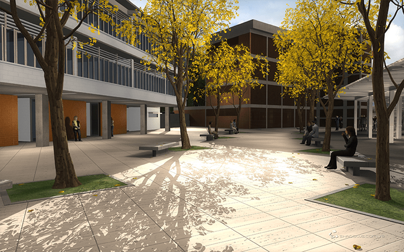

Propuesta Volumétrica
La nueva edificación es una gran cubierta plana de forma rectangular que vuela sobre los espacios públicos en sus extremos más angostos y se apoya en el sentido longitudinal sobre sendos planos de rejas metálicas que sirven de fachadas.
Por debajo de la gran cubierta se insertan dos volúmenes que albergan las diferentes funciones cerradas del complejo. El volumen más pequeño y de proporciones cubicas, contiene el ambulatorio, las aulas y los servicios generales, mientras que el volumen más grande contiene al auditorio. Entre ellos se abre un espacio a doble altura que se proyecta sobre el paisaje y la calle de servicios y en el cual discurre una escalera continua que vincula los dos niveles.

Habilitación Urbana – Ambulatorio y Formación
Proyecto: Centro Integral Tito Salas
Ubicación: Sector Los Guayabitos, Parroquia Mariche, Municipio Sucre, Caracas, Venezuela
Fecha de Ejecución: 2011
M2 de Construcción: 3225m2
Equipo Arquitectura: Tragaluz Estudio de Arquitectura
Renders: Shadows Animation
Funcionamiento
Se prevé que la Plaza Baja será un espacio público de gran frecuencia social, dada su ubicación en el contexto y disposición prominente de la fachada principal del Centro Integral Tito Salas. La relación entre la Plaza Baja y el edificio discurre a través de un sistema de escaleras que salva el desnivel de aproximadamente 2 (dos) metros de altura. Un espacio de información con su ventanilla sirve como recepción en el nivel PB del Centro, y luego desde los corredores-salas de espera, se encuentran los accesos al Consultorio Médico, la Sala de Tratamiento, el Consultorio Odontológico, los servicios sanitarios y el cuarto de vigilancia junto al cuarto de limpieza.
En el espacio comprendido entre los dos volúmenes existe una escalera que conduce a las dos aulas ubicadas en un nivel superior sobre la misma superficie del programa mencionado anteriormente. Ese mismo espacio sirve como acceso secundario del Auditorio de tal forma que se establezca una conexión expresa entre las aulas y el Auditorio.
Los corredores perimetrales continúan, uno en forma de escalera y el otro en forma de rampa para facilitar la circulación de personas con problemas de movilidad, y funcionan como conectores con la Plaza Alta que sirve de vestíbulo y acceso principal al Auditorio.
